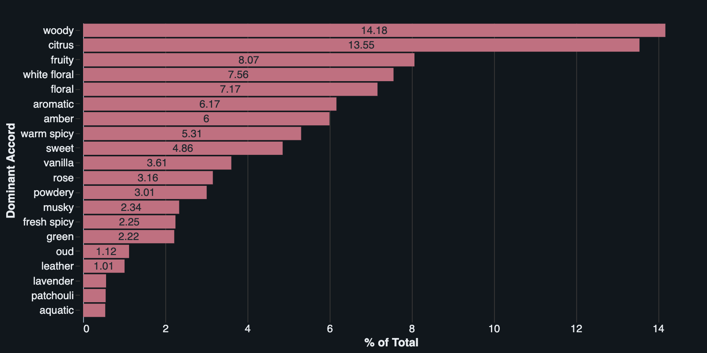
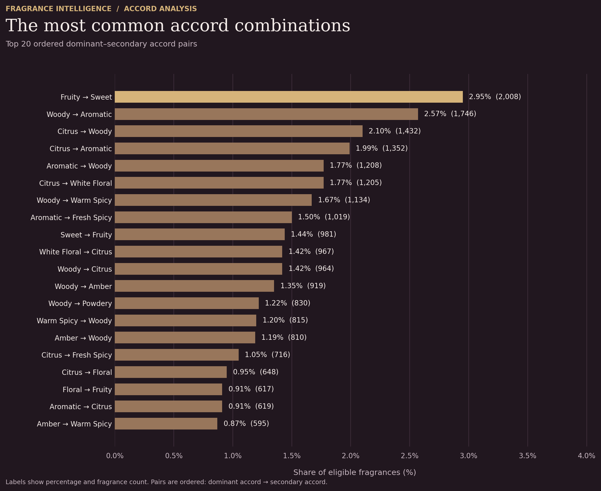

01
Dominant accord distribution
A ranking of the most frequently listed dominant accords, measured as a share of the analyzed fragrances.

DATA · FRAGRANCE · DISCOVERY
Exploring fragrance trends and olfactory families through data analysis, data quality practices, and visual storytelling.
THE OLFACTORY LANDSCAPE
Discover the dominant accords across 68,511 fragrances with accord data. Each percentage represents the share of fragrances in which that accord is listed as the dominant, or first-listed, accord. Select an accord to explore its hierarchy.
A CLOSER LOOK AT THE DATA
Across 68,511 fragrances, which accords appear most often—and which combinations define their recorded scent profiles? These two visualizations offer a starting point for exploring the patterns behind the data.
A ranking of the most frequently listed dominant accords, measured as a share of the analyzed fragrances.

The most frequent ordered combinations of first-listed and second-listed accords, ranked by fragrance count.

The dominant accord is the first-listed accord in the source data. Percentages are calculated against the 68,511-fragrance analysis population; pair rankings reflect the frequency of each ordered pair.
BEHIND THE ANALYSIS
A structured approach to turning complex fragrance data into reliable, meaningful, and accessible insights.
Understanding the source data, identifying inconsistencies, and establishing a reliable foundation for analysis.
Read the data cleaning article ↗Standardising product and brand information while examining completeness, consistency, and potential data quality issues.
Building a structured analytical workflow to organise data and support reproducible analysis.
Translating structured data into visual explorations that make fragrance families and their relationships easier to understand.